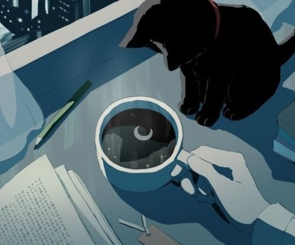

Its good to cry
Once I read,
Beverages are meant to be bottled up not human feelings.
Sometimes its good to cry
It is not a sign of weakness.
But a sign of strength
A sign of letting yourself go
and not holding yourself back.
Its okay to cry sometimes
When everything hurts inside
And you keep wondering why,
why this happened to me.
They are not tears,
but the soul of heart
along with the bears
all the feelings and pain.
Cry, cry your eyes out, if you must
coz this feeling will pass
tomorrow will be a new day.
-Yana Gupta.
